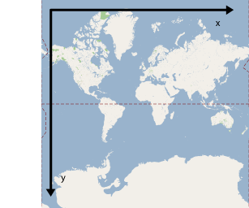
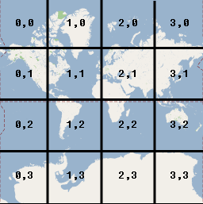

©2010 Google -
Code Home -
Terms of Service -
Privacy Policy -
Site Directory
Google Code offered in:
English -
Español -
日本語 -
한국어 -
Português -
Pусский -
中文(简体) -
中文(繁體)
Maps Javascript API V3
- Home Page
- API Reference
Code Samples:
More Resources:
Maps Javascript API V2
(Deprecated API)
Maps API for Flash
Maps Data API
(Deprecated API)
Static Maps API
Earth API
Local Search API
(Deprecated API)
Same great maps plus a SLA, support, and control over ads
Google Map Javascript API V3 - Map Types
Note: The Google Maps Javascript API Version 3 documented within these pages is now the official Javascript API. Version 2 of this API has been officially deprecated as per our deprecation policy. We encourage you to migrate your code to this newly updated and enhanced version!
Map Types
This document discusses the types of maps you can display using the
Google Maps Javascript API. The API uses a MapType
object to hold information about these maps. A MapType
is an interface that defines the display and usage of map tiles and
the translation of coordinate systems from screen coordinates to world
coordinates (on the map). Each MapType must contain a
few methods to handle retrieval and release of tiles, and properties
that define its visual behavior.
The inner workings of map types within the Maps API is an advanced topic. Most developers can simply use the basic map types noted below. However, you can also define your own map tiles using custom map types or modify the presentation of existing map types using Styled Maps. When providing custom map types, you will need to understand how to modify the map's Map Type Registry.
Basic Map Types
There are many types of maps available within the Google Maps API. In addition to the familiar "painted" road map tiles, the Google Maps API also supports other maps types.
The following map types are available in the Google Maps API:
MapTypeId.ROADMAPdisplays the default road map viewMapTypeId.SATELLITEdisplays Google Earth satellite imagesMapTypeId.HYBRIDdisplays a mixture of normal and satellite viewsMapTypeId.TERRAINdisplays a physical map based on terrain information.
You modify the map type in use by the Map by setting its
mapTypeId property, either within the constructor via setting
its Map options object, or by calling the map's
setMapTypeId() method.
#
# Setting the mapTypeId upon construction
#
var myLatlng = new google.maps.LatLng(-34.397, 150.644);
var myOptions = {
zoom: 8,
center: myLatlng,
mapTypeId: google.maps.MapTypeId.ROADMAP
};
var map = new google.maps.Map(document.getElementById("map_canvas"),
myOptions);
#
# Modifying the mapTypeId dynamically
#
map.setMapTypeId(google.maps.MapTypeId.TERRAIN);
Note that you don't actually set the map's map type directly,
but instead set its mapTypeId to reference a
MapType using an identifier. The Maps Javascript API
V3 uses a map type registry, explained below, to manage these
references.
Modifying the Map Type Registry
A map's mapTypeId is a string identifier
that is used to associate a MapType with a
unique value. Each Map object maintains a
MapTypeRegistry which contains the collection of
available MapTypes for that map. This registry
is used to select the types of maps which are available in
the Map's MapType control, for example.
You do not read directly from the map type registry. Instead,
you modify the registry by adding custom map types and associating
them with a string identifier of your choosing. You cannot modify
or alter the basic map types (though you can remove them from the
map by altering the appearance of the map's associated
mapTypeControlOptions.
The following code sets the map to show only
two map types in the map's mapTypeControlOptions
and modifies the registry to add the association with
this identifier to the actual implementation of the
MapType interface.
Note: we purposefully did not
document the creation of the custom map type itself in the previous
code. See Styled Maps or
Custom Map Types below for information
on constructing a map type.
# Modify the control to only display two maptypes, the
# default ROADMAP and the custom 'mymap'.
# Note that because this is simply an association, we
# don't need to modify the MapTypeRegistry beforehand.
var MY_MAPTYPE_ID = 'mymaps';
var mapOptions = {
zoom: 12,
center: brooklyn,
mapTypeControlOptions: {
mapTypeIds: [google.maps.MapTypeId.ROADMAP, MY_MAPTYPE_ID]
},
mapTypeId: MY_MAPTYPE_ID
};
# Create our map. This creation will implicitly create a
# map type registry.
map = new google.maps.Map(document.getElementById("map_canvas"),
mapOptions);
# Create your custom map type using your own code.
# (See below.)
var myMapType = new MyMapType();
# Set the registry to associate 'mymap' with the
# custom map type we created, and set the map to
# show that map type.
map.mapTypes.set(MY_MAPTYPE_ID, myMapType);
Styled Maps
The StyledMapType allows you to customize the presentation
of the standard Google base maps, changing the visual display of such elements
as roads, parks, and built-up areas to reflect a different style than that used
in the default map type. These components are known as features and
a StyledMapType allows you to select these features and apply
visual styles to their display (including hiding them entirely). With
these changes, the map can be made to emphasize particular components or
complement content within the surrounding page.
The StyledMapType() constructor takes an array of
MapTypeStyles, each of which is composed of selectors
and stylers. Selectors specify what map components should be
selected for styling, while stylers specify the visual modification
of those elements.
Map Features
A map consists of a set of features, such as a road
or park, which are specified using a MapTypeStyleFeatureType.
The feature types form a category tree, with all
as the root. The full list of features for selection within
a map is documented in the
Maps Javascript API V3 reference. Specifying the feature as
all will select all map elements.
Some feature type categories contain sub-categories which are specified
using a dotted notation (landscape.natural or
road.local, for example). If the parent feature
(road, for example) is specified, then styles applied to this
selection will be applied to all roads, including sub-categories.
Additionally, some features on a map typically consist of different
elements. A road, for example, consists of not only the graphical
line (geometry) on the map, but the text denoting its name (labels)
attached the map. Elements within features are selected by specifying
a category of type MapTypeStyleElementType. The
following element types are supported:
all(default) selects all elements of that feature.geometryselects only geometric elements of that feature.labelsselects only textual labels associated with that feature.
If no element type is specified, the styles will be applied to all elements regardless of element type.
The following specification selects the labels for all local roads:
{
featureType: "road.local",
elementType: "labels"
}
Stylers
Stylers are formatting options of type MapTypeStyler which
are applied to the features and elements specified within each
MapTypeStyle rule. The following MapTypeStyler
options are currently supported:
hue(an RGB hex string) indicates the basic color. (* See usage note below.)lightness(a floating point value between-100and100) indicates the percentage change in brightness of the element. Negative values increase darkness (where -100 specifies black) while positive values increase brightness (where +100 specifies white).saturation(a floating point value between-100and100) indicates the percentage change in intensity of the basic color to apply to the element.gamma(a floating point value between0.01and10.0, where1.0applies no correction) indicates the amount of gamma correction to apply to the element. Gammas modify the lightness of hues in a non-linear fashion, while unaffecting white or black values. Gammas are typically used to modify the contrast of multiple elements. For example, you could modify the gamma to increase or decrease the contrast between the edges and interiors of elements. Low gamma values (< 1) increase contrast, while high values (> 1) decrease contrast.inverse_lightness(iftrue) simply inverts the existing lightness.visibility(on,off, orsimplified) indicates whether and how the element appears on the map. Asimplifiedvisibility indicates that the map should simplify the presentation of those elements as it sees fit. (A simplified road structure may show fewer roads, for example.)
Styler rules must be applied as separate, distinct operations, and are
applied in the order they appear within the MapTypeStyler
array. Do not combine multiple operations into a single styler operation;
instead, define each operation as a separate element in the styler
array. Order is important, as some operations are not commutative. Features
and/or elements that are modified through styler operations
(usually) already have existing styles; the operations act on those existing
styles, if present.
Note that we use the
Hue, Saturation, Lightness (HSL) model to denote color within the
styler operations. These operations to define color are common within
graphic design. Hue indicates the basic color, saturation
indicates the intensity of that color, and lightness indicates the
relative amount of white or black in the constituent color. All three
HSL values can be mapped to RGB values (and vice versa).
Gamma
correction acts to modify saturation over the color space, generally
to increase or decrease contrast. Additionally, the HSL model defines color
within a coordinate space where hue indicates the orientation
within a color wheel, while saturation and lightness indicate amplitudes
along different axes. Hues are measured within an RGB color space,
which is similar to most RGB color spaces, except that shades of white and
black are absent.

An RGB Color Wheel
Note: while hue takes
an HTML hex color value, it only uses this value to determine the basic
color (its orientation around the color wheel), not its saturation or
lightness, which are indicated separately as percentage changes. For
example, the hue for pure green may be defined
as "#00ff00" or "#000100" within the hue property and
both hues will be identical. (Both values point to pure green in
the HSL color model.) RGB hue values which consist
of equal parts Red, Green and Blue — such as "#000000" (black)
and "#FFFFFF" (white) and all the pure shades of grey —
do not indicate a hue whatsoever, as none of those values
indicate an orientation in the HSL coordinate space. To indicate
black, white or grey, you must remove all saturation (set
the value to -100) and adjust lightness
instead.
Additionally, when modifying existing features which already have a
color scheme, changing a value such as hue does not change
its existing saturation or lightness.
The following example displays a map of Brooklyn where roads have been changed to bright green and the residential areas have been changed to black:
var map;
var brooklyn = new google.maps.LatLng(40.6743890, -73.9455);
function initialize() {
var stylez = [
{
featureType: "road.local",
elementType: "geometry",
stylers: [
{ hue: "#00ff00" },
{ saturation:100 }
]
},
{
featureType: "landscape",
elementType: "geometry",
stylers: [
{ lightness: -100 }
]
}
];
var mapOptions = {
zoom: 11,
center: brooklyn,
mapTypeControlOptions: {
mapTypeIds: [google.maps.MapTypeId.ROADMAP, 'hiphop']
}
};
map = new google.maps.Map(document.getElementById("map_canvas"),
mapOptions);
var styledMapOptions = {
name: "Hip-Hop"
}
var jayzMapType = new google.maps.StyledMapType(
stylez, styledMapOptions);
map.mapTypes.set('hiphop', jayzMapType);
map.setMapTypeId('hiphop');
}
View example (maptype-styled-simple.html)
The following more complicated example uses several operations and simplifications to approximate the look of a US road atlas:
var map;
var chicago = new google.maps.LatLng(41.850033, -87.650052);
function initialize() {
var roadAtlasStyles = [
{
featureType: "road.highway",
elementType: "geometry",
stylers: [
{ hue: "#ff0022" },
{ saturation: 60 },
{ lightness: -20 }
]
},{
featureType: "road.arterial",
elementType: "all",
stylers: [
{ hue: "#2200ff" },
{ lightness: -40 },
{ visibility: "simplified" },
{ saturation: 30 }
]
},{
featureType: "road.local",
elementType: "all",
stylers: [
{ hue: "#f6ff00" },
{ saturation: 50 },
{ gamma: 0.7 },
{ visibility: "simplified" }
]
},{
featureType: "water",
elementType: "geometry",
stylers: [
{ saturation: 40 },
{ lightness: 40 }
]
},{
featureType: "road.highway",
elementType: "labels",
stylers: [
{ visibility: "on" },
{ saturation: 98 }
]
},{
featureType: "administrative.locality",
elementType: "labels",
stylers: [
{ hue: "#0022ff" },
{ saturation: 50 },
{ lightness: -10 },
{ gamma: 0.9 }
]
},{
featureType: "transit.line",
elementType: "geometry",
stylers: [
{ hue: "#ff0000" },
{ visibility: "on" },
{ lightness: -70 }
]
}
];
var mapOptions = {
zoom: 12,
center: chicago,
mapTypeControlOptions: {
mapTypeIds: [google.maps.MapTypeId.ROADMAP, 'usroadatlas']
}
};
map = new google.maps.Map(document.getElementById("map_canvas"),
mapOptions);
var styledMapOptions = {
name: "US Road Atlas"
}
var usRoadMapType = new google.maps.StyledMapType(
roadAtlasStyles, styledMapOptions);
map.mapTypes.set('usroadatlas', usRoadMapType);
map.setMapTypeId('usroadatlas');
}
View example (maptype-styled-complex.html)
Creating styles by hand and testing your code to see how they look
is potentially time-consuming. Instead, you can use the following
Styled Map Wizard to help you set up the JSON for your
StyledMapStyles. The wizard allows you to select features
and elements within features, apply operations to those features, and save
the styles to JSON, which you can copy and paste into your application.
Custom Map Types
Note: This is an Advanced Topic
The Google Maps JavaScript API V3 now supports the display and management of custom map types, allowing you to implement your own map imagery or tile overlays.
Several possible map type implementations exist within the V3 API:
- Standard tile sets consisting of images which
collectively constitute full cartographic maps. These tile
sets are also known as base map types. These map types
act and behave like the existing default map types:
ROADMAP,SATELLITE,HYBRIDandTERRAIN. You can add your custom map type to a Map'smapTypesarray to allow the UI within the Maps API to treat your custom map type as a standard map type (by including it in the MapType control, for example). - Image tile overlays which display on top of existing base map types. Generally, these map types are used to augment an existing map type to display additional information and are often constrained to specific locations and/or zoom levels. Note that these tiles may be transparent, allowing you to add features to existing maps.
- Non-image map types, which allow you to manipulate the display of map information at its most fundamental level.
Each of these options relies on creating a class that
implements the MapType
interface. Additionally, the
ImageMapType class provides some built-in
behavior to simplify the creation of imagery MapTypes.
Before we explain classes which implement MapType,
it is important to understand how Google Maps determines coordinates
and decides which parts of the map to show. You will need to
implement similar logic for any base or overlay
MapTypes.
Map Coordinates
There are several coordinate systems that the Google Maps API uses:
- Latitude and Longitude values which reference a point on the world uniquely. (Google uses the World Geodetic System WGS84 standard.)
- World coordinates which reference a point on the map uniquely
- Tile coordinates which reference a specific tile on the map at the specific zoom level
World Coordinates
Whenever the Maps API needs to translate a location in the world to
a location on a map (the screen), it needs to first translate latitude
and longitude values into a "world" coordinate. This translation is
accomplished using a map projection. Google Maps uses the
Mercator projection for this purpose. You may also define your own
projection implementing the google.maps.Projection interface.
(Note that interfaces in V3 are not classes you "subclass" but instead
are simply specifications for classes you define yourself.)
For convenience in the calculation of pixel coordinates (see below) we assume a map at zoom level 0 is a single tile of the base tile size. We then define world coordinates relative to pixel coordinates at zoom level 0, using the projection to convert latitudes & longitudes to pixel positions on this base tile. This world coordinate is a floating point value measured from the origin of the map's projection to the specific location. Note that since this value is a floating point value, it may be much more precise than the current resolution of the map image being shown. A world coordinate is independent of the current zoom level, in other words.
World coordinates in Google Maps are measured from the Mercator
projection's origin (the northwest corner of the map at 180 degrees
longitude and approximately 85 degrees latitude) and increase in
the x direction towards the east (right) and increase in
the y direction towards the south (down). Because the
basic Mercator Google Maps tile is 256 x 256 pixels, the usable world
coordinate space is {0-256}, {0-256} (See below.)

Note that a Mercator projection has a finite width longitudinally but an infinite height latitudinally. We "cut off" base map imagery utilizing the Mercator projection at approximately +/- 85 degrees to make the resulting map shape square, which allows easier logic for tile selection. Note that a projection may produce world coordinates outside the base map's usable coordinate space if you plot very near the poles, for example.
Pixel Coordinates
World coordinates reflect absolute locations on a given projection, but we need to translate these into pixel coordinates to determine the "pixel" offset at a given zoom level. These pixel coordinates are calculated using the following formula:
pixelCoordinate = worldCoordinate * 2zoomLevel
From the above equation, note that each increasing zoom level
is twice as large in both the x and y
directions. Therefore, each higher zoom level contains four times as
much resolution as the preceding level. For example, at zoom level 1,
the map consists of 4 256x256 pixels tiles, resulting in a pixel space
from 512x512. At zoom level 19, each x and y pixel on the
map can be referenced using a value between
0 and 256 * 219
Because we based world coordinates on the map's tile size, a pixel coordinates' integer part has the effect of identifying the exact pixel at that location in the current zoom level. Note that for zoom level 0, the pixel coordinates are equal to the world coordinates.
We now have a way to accurately denote each location on the map,
at each zoom level. The Maps API constructs a viewport given the
zoom level center of the map (as a LatLng), and the
size of the containing DOM element and
translates this bounding box into pixel coordinates. The API then determines
logically all map tiles which lie within the given pixel bounds. Each of
these map tiles are referenced using
Tile Coordinates which greatly simplify the displaying of map
imagery.
Tile Coordinates
The Google Maps API could not possibly load all map imagery at the higher zoom levels that are most useful; instead, the Maps API breaks up imagery at each zoom level into a set of map tiles, which are logically arranged in an order which the application understands. When a map scrolls to a new location, or to a new zoom level, the Maps API determines which tiles are needed using pixel coordinates, and translates those values into a set of tiles to retrieve. These tile coordinates are assigned using a scheme which makes it logically easy to determine which tile contains the imagery for any given point.
Tiles in Google Maps are numbered from the same origin as that for
pixels. For Google's implementation of the Mercator projection, the
origin tile is always at the northwest corner
of the map, with x values increasing from west to
east and y values increasing from north to south. Tiles
are indexed using x,y coordinates from that origin. For
example, at zoom level 2, when the earth is divided up into 16 tiles,
each tile can be referenced by a unique x,y pair:

Note that by dividing the pixel coordinates by the tile size and taking the integer parts of the result, you produce as a by-product the tile coordinate at the current zoom level.
The following example displays coordinates — LatLng
values, world coordinates, pixel coordinates, and tile coordinates —
for Chicago, IL at different zoom levels:
View example (map-coordinates.html)
The MapType Interface
Custom map types must implement the MapType
interface. This interface specifies certain properties and
methods that allow the API to initiate requests to your map
type(s) when the API determines that it needs to display map
tiles within the current viewport and zoom level. You handle
these requests to decide which tile to load.
(Note: You may create your
own class to implement this interface, or —if you have
compatible imagery — use the
ImageMapType class which already implements
this interface.)
Classes implementing the MapType interface
require that you define and populate the following properties:
tileSize(required) specifies the size of the tile (of typegoogle.maps.Size). Sizes must be rectangular though they need not be square.maxZoom(required) specifies the maximum zoom level at which to display tiles of this map type.minZoom(optional) specifies the minimum zoom level at which to display tile of this map type. By default, this value is0indicating that no minimum zoom level exists.name(optional) specifies the name for this map type. This property is only necessary if you want this map type to be selectable within a MapType control. (See AddingMapTypeControls below.)alt(optional) specifies the alternate text for this map type, exhibited as hover text. This property is only necessary if you want this map type to be selectable within a MapType control. (See AddingMapTypeControls below.)
Additionally, classes implementing the MapType interface
need to implement the following methods:
getTile()(required) is called whenever the API determines that the map needs to display new tiles for the given viewport. ThegetTile()method must have the following signature:getTile(tileCoord:Point,zoom:number,ownerDocument:Document):NodeThe API determines whether it needs to call
getTile()based on theMapType'stileSize,minZoom, andmaxZoomproperties and the map's current viewport and zoom level. The handler for this method should return an HTML element given a passed coordinate, zoom level, and DOM element on which to append the tile image.releaseTile()(optional) is called whenever the API determines that the map needs to remove a tile as it falls out of view. This method must have the following signature:releaseTile(tile:Node)You typically should handle removal of any elements that were attached to the map tiles upon addition to the map. For example, if you attached event listeners to map tile overlays, you should remove them here.
The getTile() method acts as the main controller for
determining which tiles to load within a given viewport.
Base Map Types
Map types which you construct in this manner may either stand
alone or be combined with other map types as overlays. Standalone
map types are known as base map types. You may wish to have the API
treat such custom MapTypes as it would any other existing
base map type (ROADMAP, TERRAIN, etc.). To do
so, add your custom MapType to the Map's
mapTypes property. This property is of type
MapTypeRegistry.
The following code creates a base MapType to display
a map's tile coordinates and draws an outline of the tiles:
function CoordMapType() {
}
CoordMapType.prototype.tileSize = new google.maps.Size(256,256);
CoordMapType.prototype.maxZoom = 19;
CoordMapType.prototype.getTile = function(coord, zoom, ownerDocument) {
var div = ownerDocument.createElement('DIV');
div.innerHTML = coord;
div.style.width = this.tileSize.width + 'px';
div.style.height = this.tileSize.height + 'px';
div.style.fontSize = '10';
div.style.borderStyle = 'solid';
div.style.borderWidth = '1px';
div.style.borderColor = '#AAAAAA';
return div;
};
CoordMapType.prototype.name = "Tile #s";
CoordMapType.prototype.alt = "Tile Coordinate Map Type";
var map;
var chicago = new google.maps.LatLng(41.850033,-87.6500523);
var coordinateMapType = new CoordMapType();
function initialize() {
var mapOptions = {
zoom: 10,
center: chicago,
mapTypeControlOptions: {
mapTypeIds: ['coordinate', google.maps.MapTypeId.ROADMAP],
style: google.maps.MapTypeControlStyle.DROPDOWN_MENU
}
};
map = new google.maps.Map(document.getElementById("map_canvas"),
mapOptions);
// Now attach the coordinate map type to the map's registry
map.mapTypes.set('coordinate',coordinateMapType);
// We can now set the map to use the 'coordinate' map type
map.setMapTypeId('coordinate');
}
View example (maptype-base.html)
Overlay Map Types
Some map types are designed to work on top of existing map types. Such map types may have transparent layers indicating points of interest, or showing additional data to the user. (Google's traffic layer is an example of such a map type.)
In these cases, you do not wish to have the map type treated
as a separate entity. Instead, you can add the map type to
an existing MapType directly using the Map's
overlayMapTypes property. This property contains
an MVCArray of MapTypes. All map types
(base and overlay) are rendered within the
mapPane
layer. Overlay map types will display on top of any base map they
are attached to, in the order in which they appear in the
Map.overlayMapTypes array.
The following example is identical to the previous one
except that we've created a tile overlay MapType
on top of the ROADMAP map type:
function CoordMapType(tileSize) {
this.tileSize = tileSize;
}
CoordMapType.prototype.getTile = function(coord, zoom, ownerDocument) {
var div = ownerDocument.createElement('DIV');
div.innerHTML = coord;
div.style.width = this.tileSize.width + 'px';
div.style.height = this.tileSize.height + 'px';
div.style.fontSize = '10';
div.style.borderStyle = 'solid';
div.style.borderWidth = '1px';
div.style.borderColor = '#AAAAAA';
return div;
};
var map;
var chicago = new google.maps.LatLng(41.850033,-87.6500523);
function initialize() {
var mapOptions = {
zoom: 10,
center: chicago,
mapTypeId: google.maps.MapTypeId.ROADMAP
};
map = new google.maps.Map(document.getElementById("map_canvas"),
mapOptions);
// Insert this overlay map type as the first overlay map type at
// position 0. Note that all overlay map types appear on top of
// their parent base map.
map.overlayMapTypes.insertAt(0, new CoordMapType(new google.maps.Size(256, 256)));
}
View example (maptype-overlay.html)
Image Map Types
Implementing a MapType to act as a base map
type can be a time-consuming and laborious task. The API
provides a special class that implements the MapType
interface for the most common map types: map types that consist
of tiles made up of single image files.
This class, the ImageMapType class,
is constructed using an ImageMapTypeOptions
object specification defining the following required
properties:
tileSize(required) specifies the size of the tile (of typegoogle.maps.Size). Sizes must be rectangular though they need not be square.getTileUrl(required) specifies the function, usually provided as an inline function literal, to handle selection of the proper image tile based on supplied world coordinates and zoom level.
The following code implements a basic ImageMapType
using Google's traffic tiles. Note that the map type is
inserted into the map's overlayMapTypes array:
var trafficOptions = {
getTileUrl: function(coord, zoom) {
return "http://mt3.google.com/mapstt?" +
"zoom=" + zoom + "&x=" + coord.x + "&y=" + coord.y + "&client=api";
},
tileSize: new google.maps.Size(256, 256),
isPng: true
};
var trafficMapType = new google.maps.ImageMapType(trafficOptions);
var map;
function initialize() {
map = new google.maps.Map(document.getElementById("map_canvas"));
map.setCenter(new google.maps.LatLng(37.76, -122.45));
map.setZoom(12);
map.setMapTypeId('satellite');
map.overlayMapTypes.insertAt(0, trafficMapType);
}
View example (maptype-traffic.html)
Projections
The Earth is a three-dimensional sphere (approximately), while a map is a flat two-dimensional surface. The map that you see within the Google Maps API, like any flat map of the Earth, is a projection of that sphere onto a flat surface. In its simplest terms, a projection can be defined as a mapping of latitude/longitude values into coordinates on the projection's map.
Projections in the Google Maps API must implement the
Projection interface. A Projection
implementation must provide not only a mapping from one coordinate
system to another, but a bi-directional mapping. That is, you must
define how to translate from Earth coordinates (LatLngs)
to the Projection's world
coordinate system, and vice versa. Google Maps uses
the Mercator projection to create its maps
from geographic data and convert events on the map into
geographic coordinates. You can obtain this projection by
calling getProjection() on the Map
(or any of the standard base MapTypes.) For most uses,
this standard Projection will suffice, but you may also
define and use your own custom projections.
Implementing a Projection
When implementing a custom projection, you will need to define a few things:
- The formulae for mapping latitude and longitude coordinates into
a Cartesian plane and vice versa. (The
Projectioninterface only supports transformations into rectilinear coordinates.) - The base tile size. All tiles must be rectangular.
- The "world size" of a map using the base tile set at zoom level 0. Note that for maps consisting of one tile at zoom 0, the world size and base tile size are identical
Coordinate Transformations in Projections
Each projection provides two methods which translate between these two coordinate systems, allowing you to convert between geographic and world coordinates:
- The
Projection.fromLatLngToPoint()method converts aLatLngvalue into a world coordinate. This method is used to position overlays on the map (and to position the map itself). - The
Projection.fromPointToLatLng()method converts a world coordinate into aLatLngvalue. This method is used to convert events such as clicks that happen on the map into geographic coordinates.
Google Maps assumes that projections are rectilinear.
Generally, you may use a projection for two cases: to create a map of the world, or to create a map of a local area. In the former case, you should ensure that your projection is also rectilinear and normal at all longitudes. Some projections (especially conic projections) may be "locally normal" (i.e. point north) but deviate from true north, for example, the further the map is positioned relative to some reference longitude. You may use such a projection locally, but be aware that the projection is necessarily imprecise and transformation errors will become increasingly apparently the further away from the reference longitude you deviate.
Map Tile Selection in Projections
Projections are not only useful for determining the positions of
locations or overlays, but for positioning the map tiles themselves.
The Maps API renders base maps using a MapType interface,
which must declare both a projection property for
identifying the map's projection and a getTile()
method for retrieving map tiles based on
Tile Coordinate values. Tile coordinates are based on
both your basic tile size (which must be rectangular) and the "world
size" of your map, which is the pixel size of your map world
at zoom level 0. (For maps consisting of one tile at zoom 0, the tile
size and world size are identical.)
You define the base tile size within your MapType's
tileSize property. You define the world size implicitly
within your projection's fromLatLngToPoint()
and fromPointToLatLng() methods.
Since image selection depends on these passed values, it is useful
to name images that can be selected programmatically given those
passed values, such as
map_zoom_tileX_tileY.png.
The following example defines an ImageMapType
using the
Gall-Peters projection:
// Note: this value is exact as the map projects a full 360 degrees of longitude
var GALL_PETERS_RANGE_X = 800;
// Note: this value is inexact as the map is cut off at ~ +/- 83 degrees.
// However, the polar regions produce very little increase in Y range, so
// we will use the tile size.
var GALL_PETERS_RANGE_Y = 510;
function degreesToRadians(deg) {
return deg * (Math.PI / 180);
}
function radiansToDegrees(rad) {
return rad / (Math.PI / 180);
}
function GallPetersProjection() {
// Using the base map tile, denote the lat/lon of the equatorial origin.
this.worldOrigin_ = new google.maps.Point(GALL_PETERS_RANGE_X * 400 / 800,
GALL_PETERS_RANGE_Y / 2);
// This projection has equidistant meridians, so each longitude degree is a linear
// mapping.
this.worldCoordinatePerLonDegree_ = GALL_PETERS_RANGE_X / 360;
// This constant merely reflects that latitudes vary from +90 to -90 degrees.
this.worldCoordinateLatRange = GALL_PETERS_RANGE_Y / 2;
};
GallPetersProjection.prototype.fromLatLngToPoint = function(latLng) {
var origin = this.worldOrigin_;
var x = origin.x + this.worldCoordinatePerLonDegree_ * latLng.lng();
// Note that latitude is measured from the world coordinate origin
// at the top left of the map.
var latRadians = degreesToRadians(latLng.lat());
var y = origin.y - this.worldCoordinateLatRange * Math.sin(latRadians);
return new google.maps.Point(x, y);
};
GallPetersProjection.prototype.fromPointToLatLng = function(point) {
var y = point.y;
var x = point.x;
if (y < 0) {
y = 0;
}
if (y >= GALL_PETERS_RANGE_Y) {
y = GALL_PETERS_RANGE_Y;
}
var origin = this.worldOrigin_;
var lng = (x - origin.x) / this.worldCoordinatePerLonDegree_;
var latRadians = Math.asin((origin.y - y) / this.worldCoordinateLatRange);
var lat = radiansToDegrees(latRadians);
return new google.maps.LatLng(lat, lng);
};
function initialize() {
var gallPetersMap;
var gallPetersMapType = new google.maps.ImageMapType({
getTileUrl: function(coord, zoom) {
var numTiles = 1 << zoom;
// Don't wrap tiles vertically.
if (coord.y < 0 || coord.y >= numTiles) {
return null;
}
// Wrap tiles horizontally.
var x = ((coord.x % numTiles) + numTiles) % numTiles;
// For simplicity, we use a tileset consisting of 1 tile at zoom level 0
// and 4 tiles at zoom level 1.
var baseURL = 'images/';
baseURL += 'gall-peters_' + zoom + '_' + x + '_' + coord.y + '.png';
return baseURL;
},
tileSize: new google.maps.Size(800, 512),
isPng: true,
minZoom: 0,
maxZoom: 1,
name: 'Gall-Peters'
});
gallPetersMapType.projection = new GallPetersProjection();
var mapOptions = {
zoom: 0,
center: new google.maps.LatLng(0,0)
};
gallPetersMap = new google.maps.Map(document.getElementById("gallPetersMap"),
mapOptions);
gallPetersMap.mapTypes.set('gallPetersMap', gallPetersMapType);
gallPetersMap.setMapTypeId('gallPetersMap');
gallPetersMap.overlayMapTypes.insertAt(0, gallPetersMapType);
}b